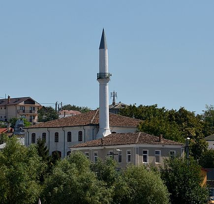

Obiective Turistice În Delta Dunării
Pe teritoriul și în vecinătatea parcului național se află mai multe obiective de interes turistic (lăcașuri de cult, monumente istorice, situri arheologice, arii protejate, zone naturale); astfel:
- Biserica ortodoxă „Buna Vestire” din Tulcea, construcție 1869, monument istoric.
- Mănăstirea și castrul roman Halmyris de la Murighiol.
- Moscheea Azizyie (Geamia Sultanului Abdulaziz) din Tulcea, lăcașul de cult reprezentativ al comunității musulmane construit în anul 1863, monument istoric.
- Așezarea greco-indigenă din satul Sălcioara (sit arheologic).
- Cetatea Argamum - Orgame, sit arheologic aflat în partea de est a județului Tulcea, pe teritoriul administrativ al comunei Jurilovca, în locul numit Capul Doloșman. Acesta este localizat la contactul dintre Podișul Babadagului și Limanul Razim care, în Antichitate, era un golf deschis al mării Negre (golful Argamon).
- Histria, cetate grecească (ruine) aflată pe teritoriul administrativ al comunei Istria, în județul Constanța; cel mai vechi oraș atestat de pe actualul teritoriu al României.
- Situl arheologic de la Vișina
- Munții Măcinului
- Marea Neagră
- Complexul lagunar Razim-Sinoe (Limanele Dobrogene) constituit din cele două unități: Unitatea Razim cu lacurile Golovița, Zmeica, Babadag, Tauc, Topraichioi și cel omonim; și Unitatea Sinoe ce cuprinde lacurile Nuntași, Tuzla și Sinoe
- Cimitirul cosmopolit din Sulina, un cimitir în care sunt înmormântați marinari din toată lumea, victime de naufragiu și chiar pirați. Există mormântul unui pirat fără nume, sunt mormintele îndrăgostiților înecați, al unei prințese și multe alte locuri de veci pline de poveste
